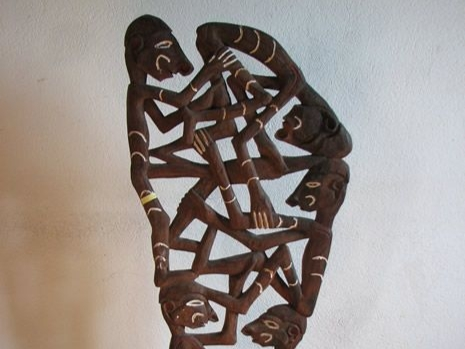
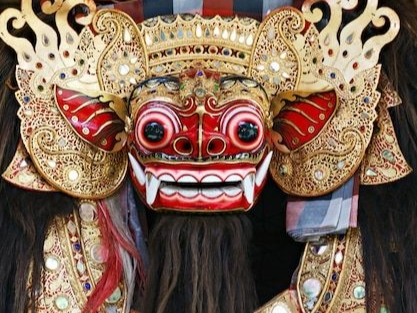
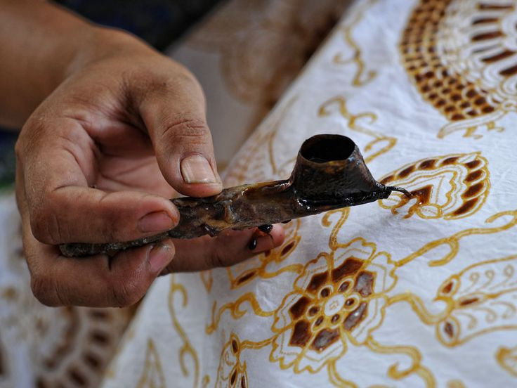
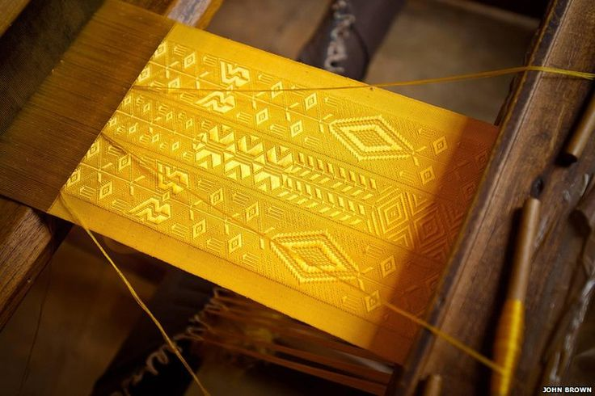
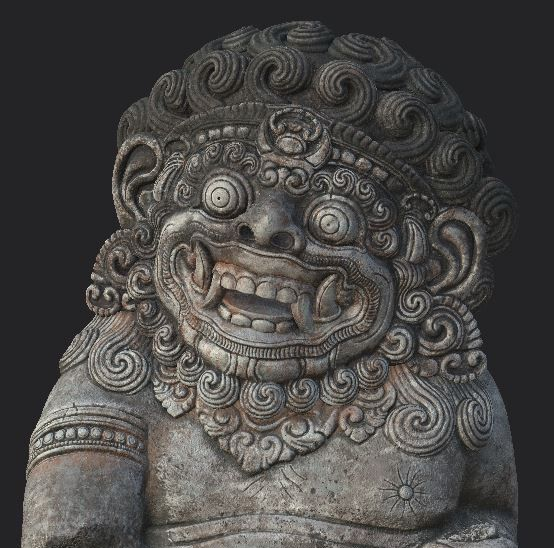
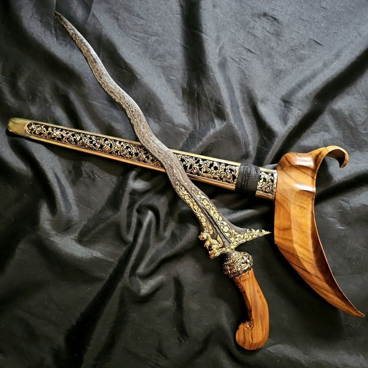
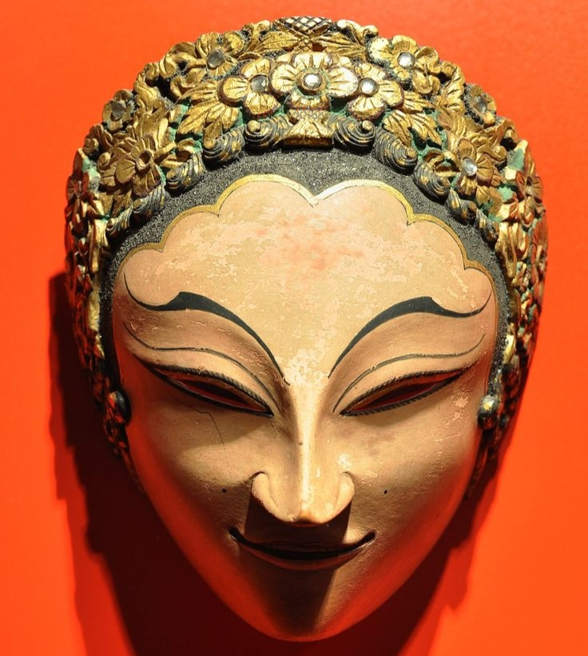
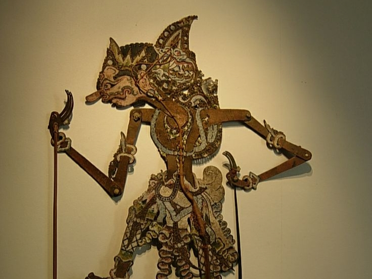
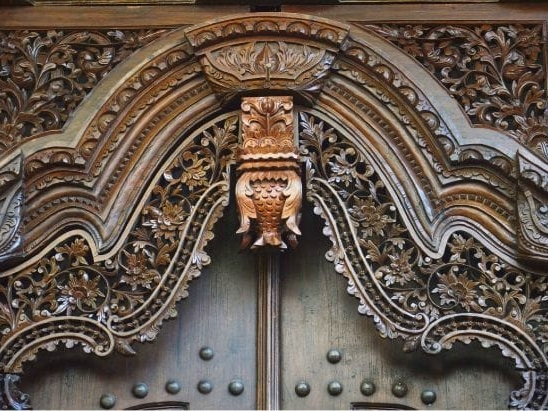

Budaya adalah identitas bangsa, penuntun jati diri, dan akar yang menjaga kita tetap utuh di tengah perubahan. Dan keberlanjutannya ada di tangan kita.
Ragam Kesenian
NUSANTARA
Kesenian di Indonesia hadir dalam berbagai bentuk, tumbuh dari tradisi, kepercayaan, dan kehidupan masyarakat. Dan setiap daerah menyimpan bentuk ekspresi yang tumbuh dari sejarah dan lingkungan mereka tinggal. Sehingga menciptakan keberagaman tradisi kebudayaan di bumi Nusantara.
Kesenian Musik.
Indonesia dikenal memiliki lebih dari seribu ragam musik tradisional dan ratusan alat musik khas, mencerminkan keragaman budaya serta etnis di tiap daerah. Kesenian musik di Indonesia tumbuh sebagai bagian dari kehidupan masyarakat, bukan sekedar hiburan. Ia hadir dalam upacara adat, ritual keagamaan, perayaan, hingga keseharian, menjadi sarana untuk menyampaikan nilai, sejarah, dan pandangan hidup.
Kesenian .Tari
Kesenian tari di Indonesia merupakan bentuk ekspresi tubuh yang lahir dari tradisi, kepercayaan dan tatanan sosial masyarakat. Gerak dalam tari tidak sekedar estetika, melainkan sarana komunikasi yang menyampaikan makna, nilai, dan identitas suatu daerah. Hingga kini, tari tradisional terus berkembang. banyak bentuk tari mengalami penyesuaian tanpa kehilangan struktur dasarnya, menunjukan kemampuan tradisi untuk bertahan dan beradaptasi di tengah perubahan zaman.
Kesenian Teater.
Dalam banyak bentuk teater tradisional Indonesia, cerita disampaikan secara simbolik. Tokoh, dialog, hingga alur pertunjukan sering kali mewakili karakter sosial, konflik kehidupan, atau ajaran moral yang mudah dipahami oleh masyarakat. hal ini menjadikan seni teater sebagai media pendidikan sekaligus refleksi sosial. Seni teater juga memiliki keterikatan kuat dengan konteks lokal. Bahasa daerah, iringan musik, serta gaya pementasan menyesuaikan dengan budaya setempat.
Kesenian Rupa.
Kesenian rupa berperan sebagai media pewarisan nilai dan identitas budaya. Melalui pola teknik yang diturunkan dari generasi ke generasi, seni rupa menjaga kesinambungan tradisi sekaligus merekam perjalanan sejarah suatu komunitas.









